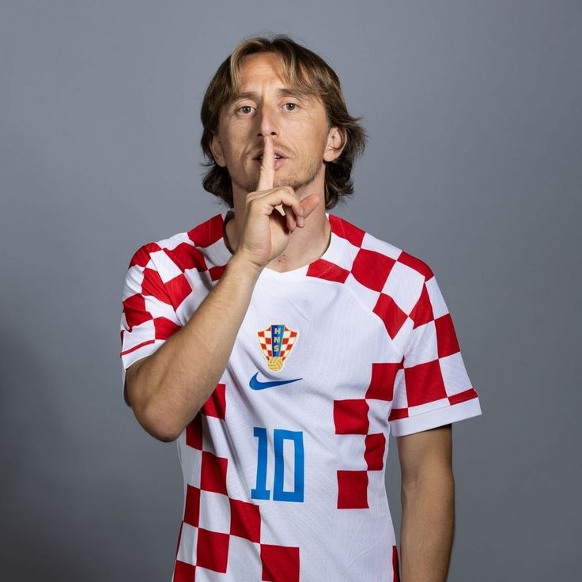
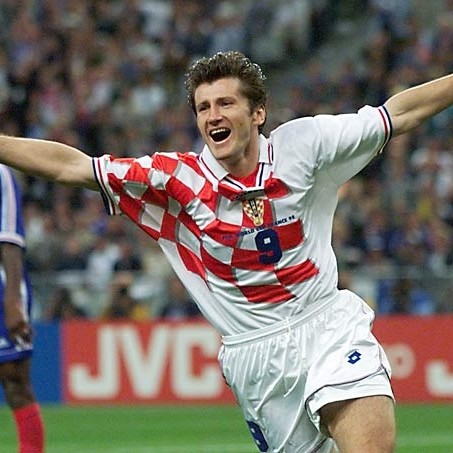
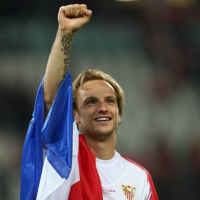
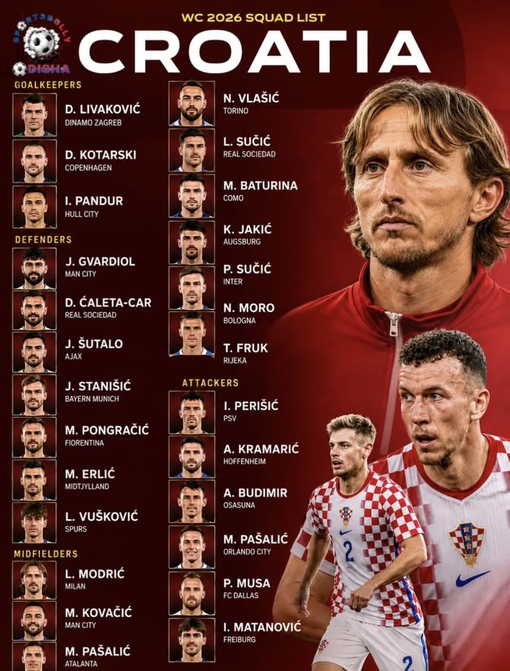
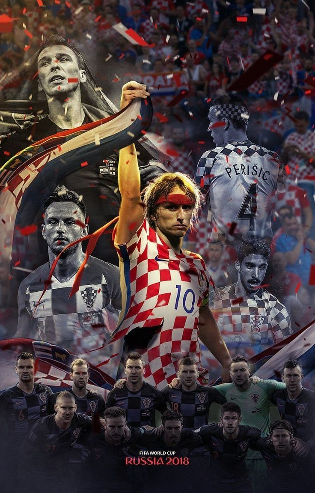
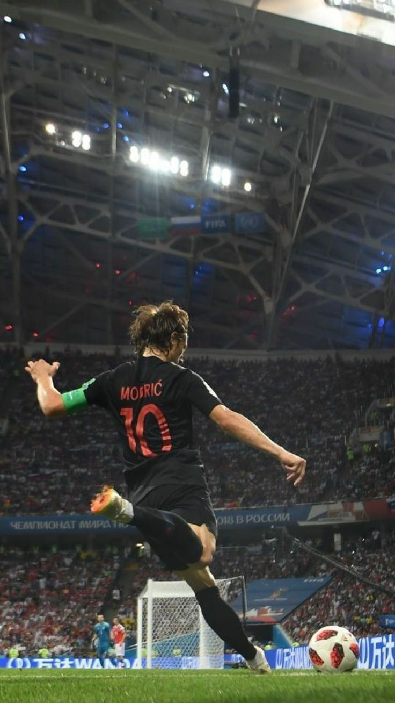
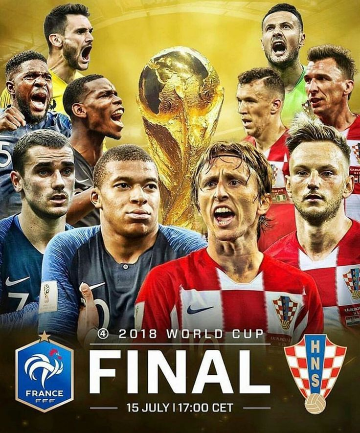

Información General
Nombre oficial: Selección Nacional de Croacia
Apodo: Vatreni (Los Ardientes)
Confederación: UEFA
Federación: Federación Croata de Fútbol
Capitán: Luka Modrić
Director Técnico: Zlatko Dalić
Primera participación mundialista: 1998
Ranking FIFA: Entre las mejores selecciones europeas.
Historia Mundialista
► Croacia se independizó en 1991 y rápidamente logró consolidar una de las selecciones más competitivas de Europa.
► En su primera participación mundialista, Francia 1998, sorprendió al mundo al obtener el tercer lugar liderada por Davor Šuker, máximo goleador del torneo.
► Su mayor logro llegó en Rusia 2018, donde alcanzó la final del Mundial y consiguió el subcampeonato tras enfrentar a Francia.
► En Catar 2022 volvió a demostrar su fortaleza obteniendo el tercer lugar y consolidándose como una potencia del fútbol internacional.
📊 Estadísticas Mundialistas
| Estadística | Dato |
|---|---|
| Participaciones | 6 |
| Títulos Mundiales | 0 |
| Mejor Resultado | Subcampeón (2018) |
| Última Participación | 2022 |
| Tercer Lugar | 1998 y 2022 |
| Confederación | UEFA |
⭐ Jugadores Históricos

Luka Modrić
Capitán histórico y ganador del Balón de Oro 2018.

Davor Šuker
Máximo goleador histórico y figura del Mundial 1998.

Ivan Rakitić
Uno de los mediocampistas más destacados en la historia croata.
🏆 Participaciones Mundialistas
1998 🥉 • 2002 • 2006 • 2014 • 2018 🥈 • 2022 🥉
🤔 Curiosidades
- ⚽ Croacia tiene menos de 4 millones de habitantes.
- ⚽ Alcanzó una final mundialista apenas 27 años después de independizarse.
- ⚽ Su uniforme a cuadros es uno de los más reconocibles del mundo.
- ⚽ Luka Modrić ganó el Balón de Oro en 2018.
- ⚽ Es una de las selecciones más exitosas en relación con el tamaño de su población.
🖼️ Galería de Imágenes



